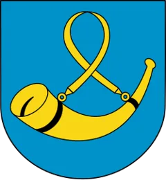

Wszystkie gry
graj w dowolną, bez planszy
Własna gra
Wybierz gry, kolejność i liczbę pytań
Mapa i miasta
Gdzie to jest?
Z lotu ptaka
Co to za miasto?
Miasta na czas
Polska na co dzień
WA
Tablice
Jaki to klub?

Jaki to herb?
Nad jaką rzeką?
Więcej czy mniej?
Granice
Kształt powiatu
Gdzie ten powiat?
Gdzie ta gmina?
Graniczą czy nie?
Wymień powiaty
Wiedza
Encyklopedia gmin, powiatów i województw
Plansza
Codzienne
Znajomi
Gry
Profil